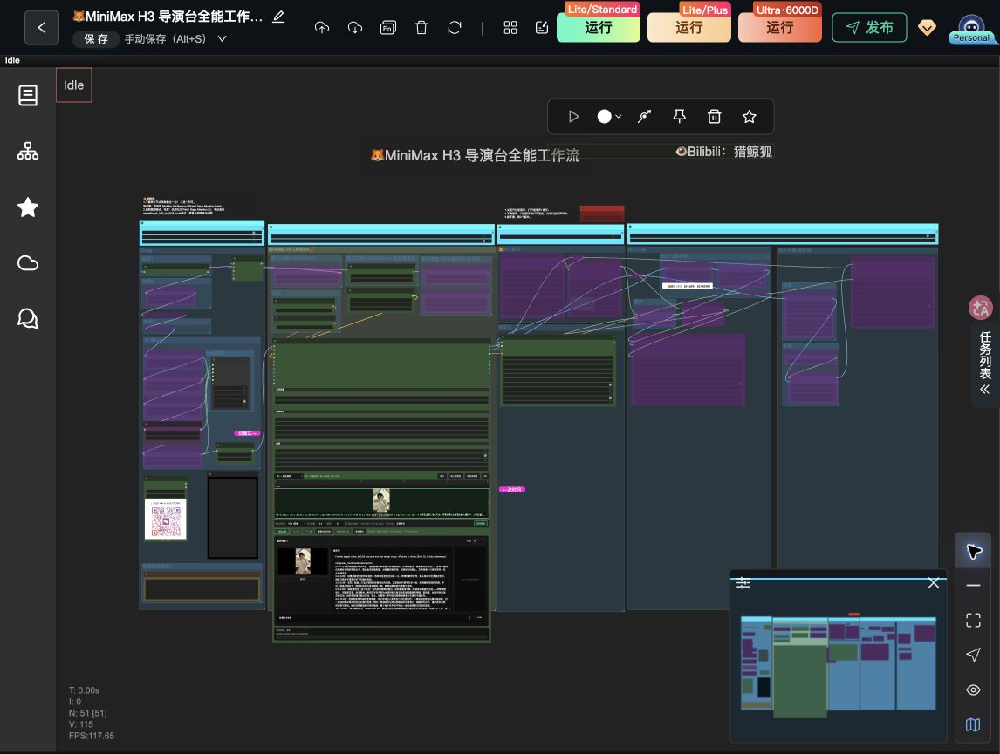

01 / 看懂这一张画布
先把它看成一条视频生产线
左边准备模型，中间的导演台负责生成，右边把画面和声音装成视频。其余分支是可选的加速、配乐、放大和补帧。大框是分组，文字贴纸是注释；它们不是新的生成模型。
当前保存的生成配置
| 模式 / 底模 | i2v 图生视频 / FL2VA INT8 |
| 分辨率 | 864 × 480，16:9，0.4 MP，32 对齐 |
| 时长 | 界面填写 5 秒 → 124 帧
124 ÷ 24 ≈ 5.17 秒 |
| 采样 | 4 steps / euler / beta
CFG 1；video shift 12；audio shift 3 |
| 素材 | 1 组提示词，导演台内部有首图；本组 LoRA 列表为空，全局链仍有 LoRA。 |
| 音频 | 导演台 audioMode=generate |
| 导出 | 全部导出；#30：24 fps，H.264 MP4，CRF 19，save_output=true |
最容易看错的 6 件事
① 连着 ≠ 启用。mode=4 的节点处于旁路，通常传递兼容输入而跳过自身处理；多输入和无输入节点的结果取决于实现。
② VAE 不是底模。底模负责生成潜变量，VAE 负责解码画面或声音。
③ 图片在导演台里面。#78 图片节点没有接线，与当前参考图不是同一路。
④ 放大和补帧不同。放大改变宽高；补帧改变帧数与流畅度。
⑤ 控制器线不是素材线。通往 #111 的虚线用于关联旁路控制目标。
⑥ 旧预览不是新结果。页面保存了历史视频预览信息，本次没有执行，不能据此验证现在的链路。
当前提示词正文描述到约 15 秒，但时间轴只设置了 5 秒（124 帧）。这两个数字并不一致；最终生成长度受时间轴/帧数配置约束。讲解页不会更改这些值。
三条视频输出路线
| 路线 | 画面经过 | 声音 / 帧率 | 导出快照状态 |
|---|
| 基础 | #145 → #23 → #30 | 声音经 #84；#30 固定 24 fps | #30 正常；声音上游含旁路，未验证实际封装 |
| 普通放大补帧 | #23 → #20 Lanczos ×2 → #19 RIFE ×2 → #25 | #84；#26 把 fps ×2，24→48 | 后期节点与 #25 均旁路 |
| 高级放大补帧 | #23 → #41 FlashVSR ×2 → #42 GIMM ×2 → #44；#40 提供 GIMM 模型 | #22 原生音频；#26 提供 fps ×2 | 后期节点与 #44 均旁路 |
倍数对应的是启用后的配置意图。边界帧数量与最终时长需在实际运行后核对，本次没有测试执行。
换模式时，先看模型家族
| 模式 | 意思 | 作者提示的底模 |
|---|
| t2v / i2v / fl2v | 文字生成 / 单图生成 / 首尾帧生成 | FL2VA：#38；备用剪枝 #1 当前未连接到下游 |
| r2v / v2v / rv2v | 参考主体 / 视频转换 / 参考素材修改视频 | Ref2VA：#62 当前旁路 |
| mixed | 界面提供混合模式选项 | 该快照未配置此模式，不能推断通用组合 |
02 / 每条线都能追溯
从输出口，流向输入口
箭头表示依赖/数据流向，不表示画布中节点的摆放顺序。点击节点按钮可跳回详解；未连线端口不会出现在本表，但会完整列在节点详情中。
MODELIMAGEAUDIOVAE / CLIP虚线：旁路控制关联
03 / 原始画布对照
来自真实工作流，不是通用示意图
2026-10-20，通过已连接的 Chrome 查看工作流画布，使用页面“导出工作流”取得只读副本。节点 ID、mode、端口、44 条连接和模型文件名来自这一份副本。页面显示 Idle，未点击运行、保存或发布。

点击图片可查看原尺寸。交互图为便于学习重新排布，位置不同；连线关系保持原样。颜色为本讲解页按数据类型统一设置，不要求与原画布逐像素一致。
如何判断可靠程度
已核对：51 节点、44 条线、20 个分组、保存的模式及参数、界面 i2v/时长/分辨率。
功能解释：依节点接口、模型命名与插件作者文档解释用途；不将文件名当作性能承诺。
没有验证：旁路后多输入节点的具体选路、运行显存、耗时、生成质量与编码成片。